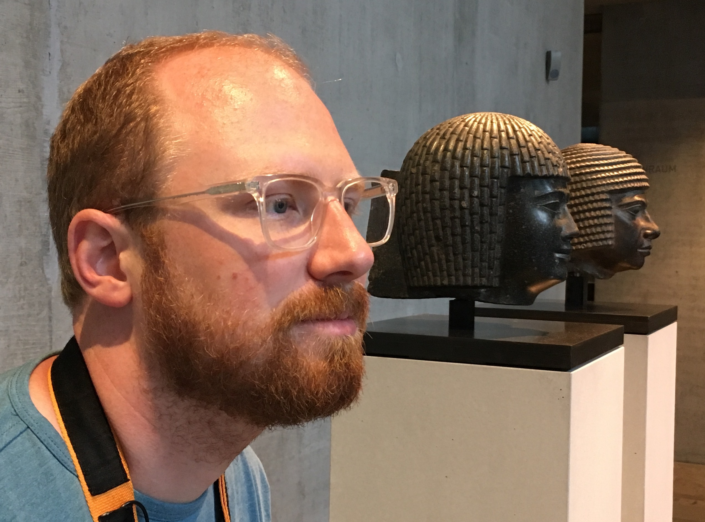
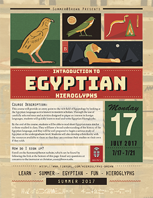

Christian Casey

Personal Information
Contact
- Online
-
- Academia.edu
- Github Profile
- Brown Grad School
- Email:
- christian_casey@brown.edu
Curriculum Vitae
CV (Current up to 2014)
Summer Course

Research
Papers
Presentations
Reconstructing Coptic Vowels ARCE Annual Meeting. Cincinnati, 2013
Puns in the Pyramid Texts ARCE Annual Meeting. Portland, 2014
Posters
The Verb jnj ARCE Annual Meeting. Atlanta, 2016
Resources for Students and Other Downloadable Content
Unicode Keyboards for OS X
Anki Flashcard Decks
Egyptian Hieroglyphic (via AnkiWeb)
Layton's Coptic in 20 Lessons
Bohairic Coptic
Demotic from Thus Wrote Onchsheshonqy
Demotic from Erichsen's Setne
Caplice's Akkadian (via AnkiWeb)
Hittite
Maya Syllabary